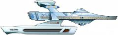

Flotta Stellare - Classe Miranda |
|
|
|  |
| USS Brattain NCC-21166 Costruita nel cantiere navale di 40 Eridani-A. Intrappolata nella fessura di Tyken dove tutto l'equipaggio, tranne un uomo, è morto a causa della mancanza di sonno REM. | Night Terrors | Per un errore di lettering, sul modellino il nome della nave è Brittain. Il modello è stato quello riciclato della Reliant di Star Trek II. |
| USS Lantree NCC-1837 Nave rifornimento di classe 6 con 26 membri di equipaggio comandata dal Capitano L. Isao Telaka. Distrutta nel 2365 per prevenire la diffusione di un virus genetico che aveva ucciso tutti i membri dell'equipaggio. | Unnatural Selection | Il modellino della Lantree è lo stesso utilizzato per la
Reliant in Star Trek II a cui è
stato rimosso il roll bar superiore. Il ponte della Lantree è quello del ponte di battaglia dell'Enterprise a cui sono state apportate alcune modifiche. Nello script di Unnatural Selection la nave viene definita come un vascello di classe R, mentre nella versione definitiva dell'episodio è di classe 6. |
| USS Majestic Distrutta nel 2374 mentre tentava di superare il blocco navale del Dominio assieme alla Defiant e alla Sitak. | Sacrifice of Angels | |
| USS Nautilus NCC-31910 Ha combattuto nella flotta alleata che ha invaso il territorio cardassiano nel sistema Chin'toka nel 2374. | Tears of the Prophets | Il Nautilus è stato il primo sommergibile a raggiungere il Polo
Nord ed è il nome del vascello del capitano Nemo nel romanzo 20.000 Leghe
sotto i mari. Il nome della nave non è citato nei dialoghi e lo si vede solamente sullo scafo. |
| USS Reliant NCC-1864 Comandata dal capitano Clark Terrell, abbordata da Khan nel 2285 e distrutta dalla detonazione del dispositivo Genesis. | Star Trek II | La Reliant è stata disegnata da Mike Minor e Joe Jennings. Il modellino è stato realizzato dalla ILM sotto la supervisione di Jeff Mann. |
| USS Saratoga NCC-1937 Messa fuori uso nei pressi della Zona Neutrale dalla sonda aliena diretta verso Terra alla ricerca delle balene megattere. | Star Trek IV | La Saratoga è una portaerei americana gemella della Lexington. Saratoga Springs è la località in cui l'esercito dei coloni americani guidato da Horatio Gates sconfisse le Giubbe Rosse del generale Burgoyne. Saratoga, Lexington, Hornet ed Enterprise sono state le quattro portaerei della flotta del pacifico che scamparono all'attacco di Pearl Harbour. |
| USS Saratoga NCC-31911 Distrutta dai Borg a Wolf 359. | Emissary | |
| ShirKahr NCC-31905 Distrutta nel 2374 durante la battaglia tra Federazione e Dominio per il controllo del sistema Chin'toka. | Tears of the Prophets | ShirKahr è la città natale di Spock. |
| USS Sitak Dispersa mentre tentava di superare il blocco navale del Dominio assieme alla Defiant e alla Majestic. | Sacrifice of Angels | In Favor the Bold c'è una vulcaniana di nome Sitak. |
| USS Tian An Men NCC-21382 Faceva parte della flotta di Picard per bloccare gli aiuti romulani durante la guerra civile klingon. | Redemption - Part II | Il nome è un omaggio agli studenti deceduti durante le proteste che si sono tenute a Pechino. |
| [Senza Nome] | Generations |
|
||||||||